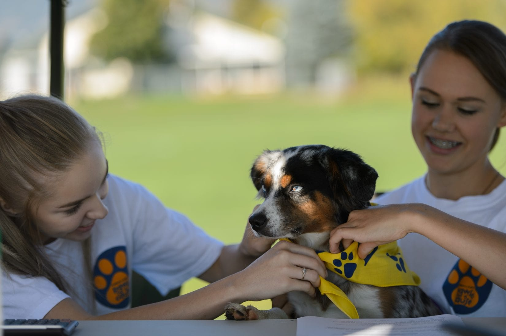
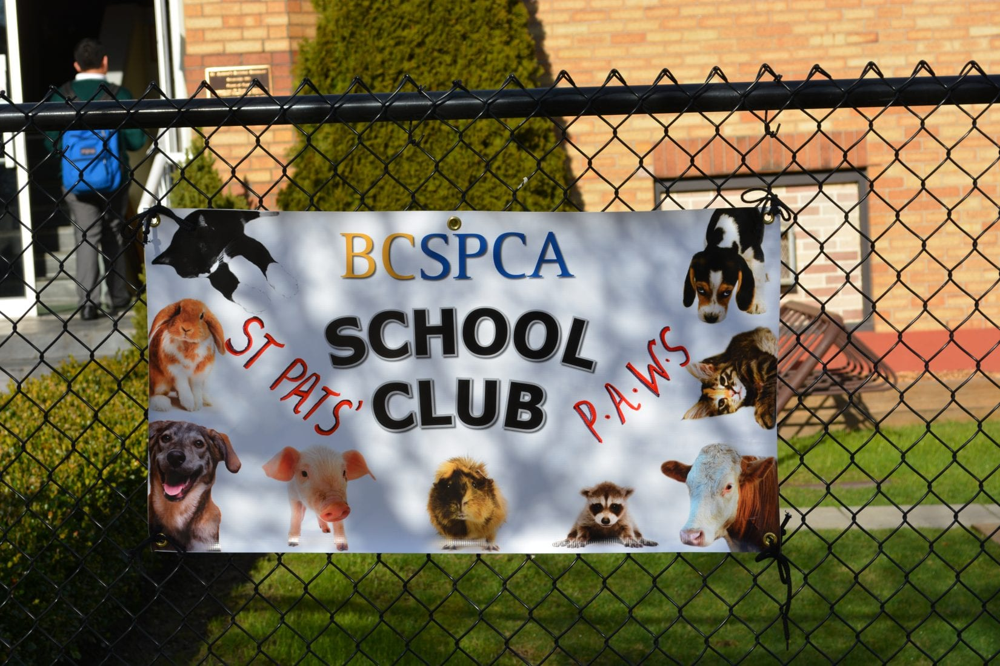
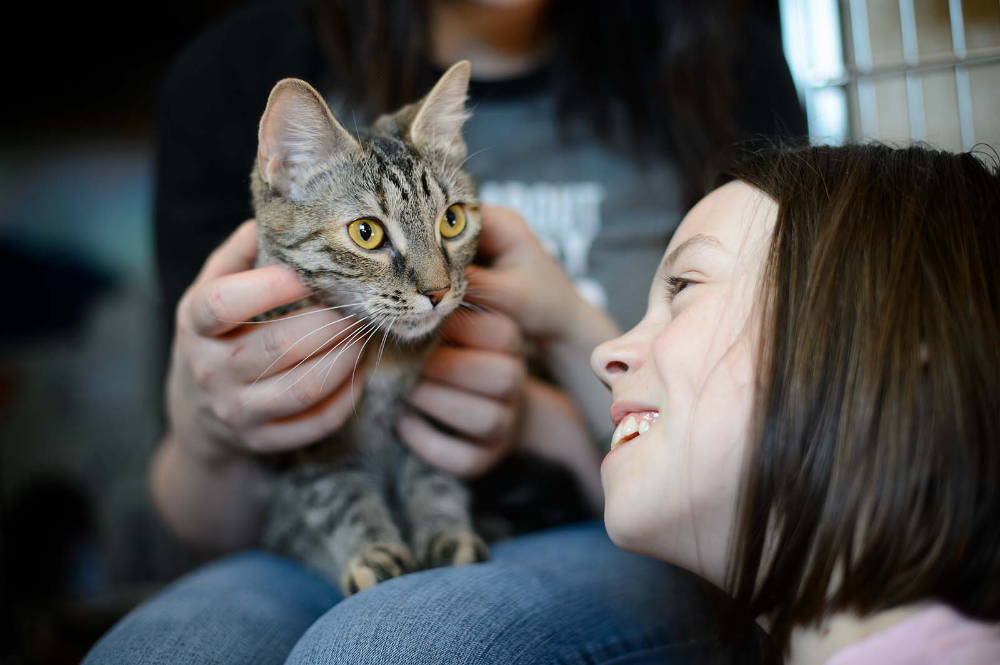
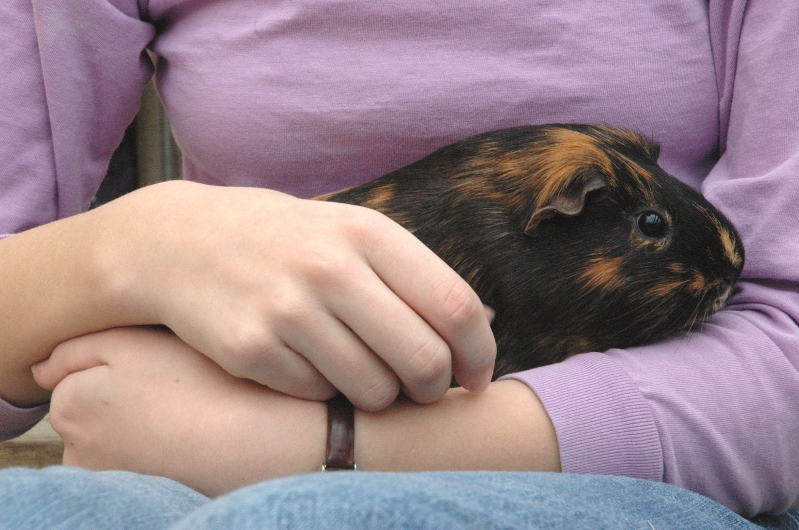

Shelter and care
Animals need safe spaces, food, bedding, and patient people while they wait.
See care needsWe can share, support, and speak up for shelter animals in BC. Small student actions can help more pets get seen.
Join the mission to give every furry friend a better chance, even between classes.




Hey! I’m Linus. I come with my best friend Chester.
Meet the Animals
Linus is a small senior dog with plenty of pep and a huge soft spot for Chester, his bonded best friend. They need to be adopted together, and Linus also needs ongoing vet care to stay comfortable.
You might not be able to adopt him today, but sharing his profile helps more people see that senior shelter pets still deserve warmth, patience, and a couch to call home.
Meet Our Pets

Male — 2 years old
Guinea Pig
Maple Ridge, B.C.
Male — 6 years old
Budgie
Kelowna, B.C.
Male — 3 years old
Netherland Dwarf
Victoria, B.C.
Female — 5 years old
Domestic Short Hair
Sechelt, B.C.
Male — 7 years old
Rottweiler / Labrador Retriever
Comox, B.C.
Female — 8 years old
German Shepherd
Castlegar, B.C.
Male — 2 years old
German Shepherd / Pit Bull Terrier
Parksville, B.C.
Female — 1 year old
Domestic Short Hair
Port Alberni, B.C.Why This Matters
Animals need safe spaces, food, bedding, and patient people while they wait.
See care needsMany shelter pets need checkups, medicine, vaccines, or emergency care.
Support treatmentAwareness helps more animals get noticed, adopted, and supported.
Share a profileMore pets are being surrendered or lost than ever before, leaving local staff stretched incredibly thin.
Yes. Shelters desperately need community word-of-mouth. Driving local awareness helps animals find homes faster.
Not a single cent. Sharing resources, donating old blankets, or volunteering your time costs absolutely nothing.
Myth vs Fact
Fact: Many animals are surrendered because of a person’s situation, not because the animal did anything wrong.
Fact: Students can share posts, donate supplies, learn more, or volunteer when they are eligible.
Fact: Small actions can spread awareness and connect more people to shelter resources.
Ways Students Can Help
Browse local shelter animals and share their profiles with someone who might be ready to adopt.
Meet adoptable petsSupport shelters with useful supplies like towels, blankets, pet food, or clean animal-care items.
Find supply ideasLearn what student-friendly volunteer roles exist and how small tasks can support shelter teams.
Explore volunteer pathsQuick Vote
It takes less than 60 seconds to tell me if these stories changed how you look at local animal welfare—or if they made you want to step up.
Take the 1-Min QuizCommunity Discussion
After reading, leave a short comment or answer one of the prompts below. Your response helps show whether this campaign started a real conversation, not just page views.
What is one thing you learned about animal shelters or rescue animals?
What is one small action you think students can realistically take?
Did anything on this website change how you think about adoption or animal welfare?
Would you share this information with someone else? Why or why not?
Animal Stories

Sylvester’s story shows how much care can be hidden behind one animal’s quiet recovery.
Read Story
Pet food banks help families keep animals fed and cared for during hard weeks.
Read Story
Henry, Vincent, and Ernest needed patience, safe care, and people willing to help.
Read Story
A quick reminder that the animal world is full of protective, patient, amazing moms.
Read Story
Zoe’s story shows how emergency support can protect pets when families are in crisis.
Read Story
Gus’s path from hardship to home is exactly why animal welfare stories matter.
Read Story
Comments 28
Leave a comment through Google Forms
Leave a CommentI probably wouldn’t volunteer right now because of school, but I would share adoption posts.
I followed the BC SPCA Instagram after reading this because I want to see adoption updates.
I always thought shelter animals were harder to take care of, but the myth section changed my opinion a bit.
I honestly didn’t know shelters needed things like towels and blankets. That actually seems easy to donate.
I liked the part about ways students can help because most websites only talk about donating money.
I probably wouldn’t donate money, but donating old towels sounds realistic.
I think more students would care if they knew small actions still matter.
I might tell my parents about adopting from shelters in the future.
I scanned this because of the poster and ended up reading the whole thing lol.
The myth vs fact section was probably the most interesting part.
I didn’t know students could still help without actually adopting.
The website made animal welfare feel more relevant than I expected.
I’m not sure if I would volunteer, but I would probably follow updates.
I think this was a cool idea for students who want to help animals.